线程池
常用线程池
常用的线程池都是直接或间接通过配置ThreadPoolExecutor来实现不同特性的线程池。
比较最常见的四类具有不同特性的线程池分别为：
- FixedThreadPool
public static ExecutorService newFixedThreadPool(int nThreads) {
return new ThreadPoolExecutor(nThreads, nThreads,
0L, TimeUnit.MILLISECONDS,
new LinkedBlockingQueue<Runnable>());
}
只有核心线程，并且数量固定的，也不会被回收，所有线程都活动时，因为队列没有限制大小，新任务会等待执行。
优点:更快的响应外界请求。
-
SingleThreadPool
只有一个核心线程，相当于FixedThreadPool(1) -
CachedThreadPool
public static ExecutorService newCachedThreadPool() {
return new ThreadPoolExecutor(0, Integer.MAX_VALUE,
60L, TimeUnit.SECONDS,
new SynchronousQueue<Runnable>());
}
核心线程数0，只有非核心线程，最大线程数非常大，所有线程都活动时，会为新任务创建新线程，否则会利用空闲线程(60s空闲时间，过了就会被回收，所以线程池中有0个线程的可能)处理任务。
优点: 任何任务都会被立即执行(任务队列SynchronousQueue相当于一个空集合); 比较适合执行大量的耗时较少的任务。
- ScheduledThreadPool
public ScheduledThreadPoolExecutor(int corePoolSize) {
super(corePoolSize, Integer.MAX_VALUE,
10, MILLISECONDS,
new DelayedWorkQueue());
}
核心线程数固定，非核心线程(闲着没活干会被立即回收)数没有限制。
优点: 适合执行定时任务以及有固定周期的重复任务
源码分析
状态定义
//用一个integer记录状态和线程数
private final AtomicInteger ctl = new AtomicInteger(ctlOf(RUNNING, 0));
//高3位作为状态，低29位作为线程计数
private static final int COUNT_BITS = Integer.SIZE - 3;
//最大线程数承受容量，低29位全部为1
private static final int CAPACITY = (1 << COUNT_BITS) - 1;
//线程池状态定义
private static final int RUNNING = -1 << COUNT_BITS;
private static final int SHUTDOWN = 0 << COUNT_BITS;
private static final int STOP = 1 << COUNT_BITS;
private static final int TIDYING = 2 << COUNT_BITS;
private static final int TERMINATED = 3 << COUNT_BITS;
//获取状态
private static int runStateOf(int c) { return c & ~CAPACITY; }
//获取线程数
private static int workerCountOf(int c) { return c & CAPACITY; }
//设置状态和线程数
private static int ctlOf(int rs, int wc) { return rs | wc; }
线程池内部定义了线程池的状态和线程数量， ThreadPoolExecutor 使用AtomicInteger类型的ctl来综合表示线程池状态及线程数量，其中线程池状态用高3位表示，线程数量用低29位表示。
线程池状态可通过数字大小进行比较，另外状态是单调递增变化，不保证所有状态都会经历。
线程池状态包括以下几种：
* RUNNING
可接收新任务，且可执行队列里的任务
* SHUTDOWN
调用shutdown()，不接收新任务，但仍执行队列里的任务
* STOP
调用shutdownNow()，不接收新任务，且不执行队列里的任务，且会中断正在执行的任务
* TIDYING
所有任务都已结束，线程池数量为0，线程转换到该状态时会调用terminated()方法
* TERMINATED
terminated()方法执行结束
关键参数
- corePoolSize
线程池核心线程数量 - maximumPoolSize
线程池允许最大线程数量 - keepAliveTime
超出线程池核心数量之外的空闲线程存活时间 - workQueue
任务阻塞队列
提交任务
public void execute(Runnable command) {
if (command == null)
throw new NullPointerException();
// 提交任务，考虑三个因素：线程池运行状态 当前活跃线程数量 任务队列
int c = ctl.get();
//当前活跃线程数量少于核心线程数，直接创建核心线程任务执行
if (workerCountOf(c) < corePoolSize) {
if (addWorker(command, true))
return;
c = ctl.get();
}
// 执行到这里说明线程池数量超过核心线程数量，或前面创建核心线程已失败
// 如果线程池在运行，添加到队列
if (isRunning(c) && workQueue.offer(command)) {
// 由于多线程问题，比如线程池可能已关闭，那么这个任务是不应该入队的
int recheck = ctl.get();
// 这里在将任务添加到队列后，重新检查 线程池运行状态 以及 当前活跃线程数量
// 线程池不是Running，尝试从队列移除刚添加的任务，如果返回true，则说明移除成功，返回false则说明任务已不在队列
if (! isRunning(recheck) && remove(command))
//从队列移除，走饱和策略处理
reject(command);
else if (workerCountOf(recheck) == 0)
// 线程池处于Running，可能由于线程执行任务抛出异常，导致线程数量为0，那么此时需要重新创建线程
addWorker(null, false);
}
//队列里添加不了，直接创建非核心线程执行
else if (!addWorker(command, false))
reject(command);
}

从图可以看出，线程池执行所提交的任务过程主要有这样几个阶段：
- 先判断核心线程池是否已满(当前运行线程数 >= corePoolSie)。如果不是，则新创建一个线程执行刚提交的任务，否则进入第2步；
- 判断当前阻塞队列是否已满，如果未满，则将提交的任务放置在阻塞队列中等待；否则，则进入第3步；
- 判断线程池中是否已满(当前运行线程数 == maxCorePoolSie)，如果没有，则创建一个新的线程来执行任务，否则，最后交给饱和策略进行处理。
线程池饱和策略
- AbortPolicy
为java线程池默认的阻塞策略，不执行此任务，而且直接抛出一个运行时异常，切记ThreadPoolExecutor.execute需要try catch，否则程序会直接退出。 - DiscardPolicy
直接抛弃，任务不执行，空方法 - DiscardOldestPolicy
从队列里面抛弃head的一个任务，并再次执行此task。 - CallerRunsPolicy
在调用execute的线程里面执行此command，会阻塞入口 - 用户自定义拒绝策略
实现RejectedExecutionHandler，并自己定义策略模式
创建线程任务
private boolean addWorker(Runnable firstTask, boolean core) {
retry:
for (;;) {
int c = ctl.get();
int rs = runStateOf(c);
//如果是SHUTDOWN之后的状态，则不会接受新任务
//如果是SHUTDOWN状态，但是队列还有任务没执行，则还需要执行，否则也是返回false
if (rs >= SHUTDOWN &&
! (rs == SHUTDOWN &&
firstTask == null &&
! workQueue.isEmpty()))
return false;
// 乐观锁，确保线程数量+1
for (;;) {
int wc = workerCountOf(c);
if (wc >= CAPACITY ||
wc >= (core ? corePoolSize : maximumPoolSize))
return false;
if (compareAndIncrementWorkerCount(c))//线程数+1
break retry;//跳出外层for循环
c = ctl.get();
if (runStateOf(c) != rs)
//状态不对？继续外层for循环
continue retry;
}
}
// 以上部分只是增加了线程数量，但并未创建真正的线程，下面才是真正的创建线程
boolean workerStarted = false;
boolean workerAdded = false;
Worker w = null;
try {
//创建worker，创建新线程，但是该线程仍是孤立的线程，没有加入线程池中，没法被线程池调度
w = new Worker(firstTask);
final Thread t = w.thread;
if (t != null) {
//考虑到多线程并发问题，刚才增加完线程数量后，线程池状态可能已经发生了变化
//因此，接下来对代码进行加锁，避免多线程问题，然后重新检查线程状态是否满足条件
final ReentrantLock mainLock = this.mainLock;
mainLock.lock();
try {
// Recheck while holding lock.
// Back out on ThreadFactory failure or if
// shut down before lock acquired.
int rs = runStateOf(ctl.get());
if (rs < SHUTDOWN ||
(rs == SHUTDOWN && firstTask == null)) {
if (t.isAlive()) // precheck that t is startable
throw new IllegalThreadStateException();
workers.add(w);//加入线程池
int s = workers.size();
if (s > largestPoolSize)
largestPoolSize = s;
workerAdded = true;
}
} finally {
mainLock.unlock();
}
// 如果线程添加到线程池成功，就start该线程
if (workerAdded) {
t.start();
workerStarted = true;
}
}
} finally {
// 如果线程添加到线程池失败，就回滚刚才增加的线程池线程数量
if (! workerStarted)
addWorkerFailed(w);
}
return workerStarted;
}
private void addWorkerFailed(Worker w) {
final ReentrantLock mainLock = this.mainLock;
mainLock.lock();
try {
if (w != null)
workers.remove(w);//移出线程池
decrementWorkerCount();//线程数-1
tryTerminate();
} finally {
mainLock.unlock();
}
}
线程执行
当线程（内部 Worker类）被成功添加到线程池后，会开始执行线程，worker类实现了Runnable
private final class Worker extends AbstractQueuedSynchronizer implements Runnable
Worker(Runnable firstTask) {
setState(-1); // inhibit interrupts until runWorker
this.firstTask = firstTask;
//注意newThread传参this，也就是线程会执行当前worker的run方法。
this.thread = getThreadFactory().newThread(this);
}
/** Delegates main run loop to outer runWorker. */
public void run() {
//线程运行从这里开始
runWorker(this);
}
final void runWorker(Worker w) {
Thread wt = Thread.currentThread();
//实际的线程任务为task
Runnable task = w.firstTask;
w.firstTask = null;
w.unlock(); // allow interrupts
boolean completedAbruptly = true;
try {
//一个worker线程通过while死循环不断获取新的任务来执行
while (task != null || (task = getTask()) != null) {
w.lock();
// If pool is stopping, ensure thread is interrupted;
// if not, ensure thread is not interrupted. This
// requires a recheck in second case to deal with
// shutdownNow race while clearing interrupt
if ((runStateAtLeast(ctl.get(), STOP) ||
(Thread.interrupted() &&
runStateAtLeast(ctl.get(), STOP))) &&
!wt.isInterrupted())
wt.interrupt();
try {
beforeExecute(wt, task);
Throwable thrown = null;
try {
task.run();//真正执行线程池任务
} catch (RuntimeException x) {
thrown = x; throw x;
} catch (Error x) {
thrown = x; throw x;
} catch (Throwable x) {
thrown = x; throw new Error(x);
} finally {
afterExecute(task, thrown);
}
} finally {
task = null;
w.completedTasks++;
w.unlock();
}
}
completedAbruptly = false;
} finally {
//处理任务完成
processWorkerExit(w, completedAbruptly);
}
}
获取队列任务
private Runnable getTask() {
boolean timedOut = false; // Did the last poll() time out?
for (;;) {
int c = ctl.get();
int rs = runStateOf(c);
// 以下两种情况直接返回，并且结束该worker线程（返回null）
// - 线程池处于SHUTDOWN状态且任务队列为空
// - 线程池处于STOP之后的状态
if (rs >= SHUTDOWN && (rs >= STOP || workQueue.isEmpty())) {
decrementWorkerCount();
return null;
}
int wc = workerCountOf(c);
// 线程数量超过最大线程数量，或者超过核心线程数量，或者允许核心线程获取任务超时
// 这种情况下，获取阻塞队列中的任务，需要指定最大等待时间，即keepAliveTime
boolean timed = allowCoreThreadTimeOut || wc > corePoolSize;
if ((wc > maximumPoolSize || (timed && timedOut))
&& (wc > 1 || workQueue.isEmpty())) {
// 由于线程池数量可能动态变化，所以，尝试减少线程数并最终结束该线程
if (compareAndDecrementWorkerCount(c))
return null;
continue;
}
try {
//从阻塞队列获取任务，注意poll和take都是阻塞式获取，其中poll可以指定最大阻塞时间，而take可以一直阻塞。
Runnable r = timed ?
workQueue.poll(keepAliveTime, TimeUnit.NANOSECONDS) :
workQueue.take();
if (r != null)
return r;
timedOut = true;
} catch (InterruptedException retry) {
//等待超时了，进入下一个循环，之后可能将退出线程。
timedOut = false;
}
}
}
线程清理
private void processWorkerExit(Worker w, boolean completedAbruptly) {
if (completedAbruptly) // If abrupt, then workerCount wasn't adjusted
decrementWorkerCount();
final ReentrantLock mainLock = this.mainLock;
mainLock.lock();
try {
completedTaskCount += w.completedTasks;
workers.remove(w);
} finally {
mainLock.unlock();
}
tryTerminate();
int c = ctl.get();
if (runStateLessThan(c, STOP)) {
if (!completedAbruptly) {
int min = allowCoreThreadTimeOut ? 0 : corePoolSize;
if (min == 0 && ! workQueue.isEmpty())
min = 1;
if (workerCountOf(c) >= min)
return; // replacement not needed
}
// 异常关闭线程 或 线程数量不满足最小值时创建线程，以防止线程全部异常结束时，任务队列里的其他任务没法继续执行
addWorker(null, false);
}
}
阻塞队列
CachedThreadPool 中使用 SynchronousQueue 作为阻塞队列
take() & put() //这是阻塞的，会阻塞操作线程
poll() & offer() //这是非阻塞的（在不设置超时时间的前提下）
synchronousQueue是一个没有数据缓冲的阻塞队列（也就是排队数不超过1），生产者线程对其的插入操作put()必须等待消费者的移除操作take()，反过来也一样。
对于使用 synchronousQueue 的线程池，在第一次execute任务的时候offer()返回false，因为线程池中还没有线程，所以没有消费者在等待，所以就会直接创建线程进行执行任务，而不能加入队列。
当一个worker线程执行完成后，使用take或pool获取下一个队列任务时，相当于有一个消费者在等待，这时再次调用execute的任务，就可以加入队列(offer成功)，这样就达到了cachedThreadPool线程复用的目的。
简单的说还是使用synchronousQueue的线程池，队列中最多存只有一个任务，且立马会被取出执行(worker线程复用)，否则都是创建新的worker线程执行新任务。